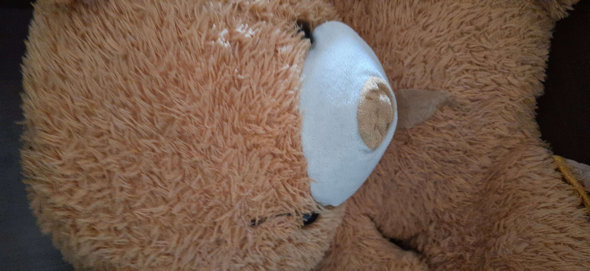

Output on Google lens -
Output on Mobilenet Model -

Which Would I Prefer
Google Lens
Why? Google lens
You can get details or take actions on your photos, objects around you, and image searches with Google Lens. Notes: Lens can translate text into all Google Translate languages.
Google Lense
Google Lens is best described as a search engine for the real world. It uses artificial intelligence to identify text and objects both within images and in a live view from your phone's camera, and it then lets you learn about and interact with those elements in all sorts of interesting ways.
Mobile Net
MobileNet is a streamlined architecture that uses depthwise separable convolutions to construct lightweight deep convolutional neural networks and provides an efficient model for mobile and embedded vision applications